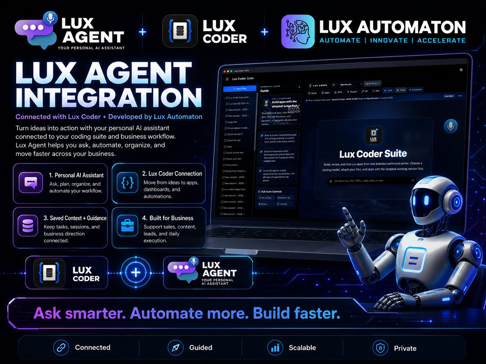

Everything you need — model freedom, comparison data, cost savings, and ecosystem integration — in one glance.
See Lux Coder Suite running live — the command center, API settings, session history, and full suite controls.
Locked environments restrict your model selections, control protocols, and client deliveries. Lux Coder restores developer agency.
Terminal-first and Anthropic-centered. Locks your workflows to a single model provider.
Standalone workspace and Google-centered. Tied directly to closed environment tools.
OpenAI-native and tied to OpenAI’s ecosystem credits and limits.
Powerful foundation, but requires heavy manual configuration, tuning, and lacks polish.
A branded command center inside VS Code that lets you choose your models, keep memory, manage keys, review diffs, and export proof.
No more jumping between browser windows or single-model plugins. Lux Coder brings visual controls, failover layers, and multi-agent loops directly into your workspace.
Use a visual AI coding workspace without leaving your editor. Trigger tasks, review modifications, and manage sessions side-by-side with your code.
Use OpenRouter, OpenAI, Anthropic, Gemini, Groq, NVIDIA, and custom endpoints. Switch between models instantly depending on the task's complexity.
When one provider API key or account hits rate limits or quota caps, Lux Coder automatically rolls over to your next configured provider, ensuring zero downtime.
Never lose your coding conversations or build context. Retrieve full session history and continue conversations seamlessly across editor restarts.
Keep project knowledge across sessions. Local markdown files serve as knowledge graphs so the AI remembers architecture rules, APIs, and project constraints.
Deploy specialized agents for frontend, backend, security auditing, DevOps automation, testing coverage, database schema, architecture design, and more.
Inspect AI-generated file changes before accepting them. Compare code in an interactive git-style visual split panel inside VS Code.
Run multiple build, research, or debugging sessions side by side. Specialist sub-agents report back in the background while you focus on core logic.
Export conversation logs, benchmark outputs, and workspace views with clean Lux branding for client proof-of-work, invoice backings, and reporting.
Connect coding outputs, automation tasks, and physical hardware business databases together. Bridge the gap between build code and client CRM pipelines.
The native developer loop inside VS Code, automated by specialized background agents.
Launch Lux Coder visual side panel inside VS Code.
Choose your API model or point to custom local weights.
Deploy LANA or a specific sub-agent to edit, write, or review.
Examine the changes visually before writing to file.
Commit conversational state and context to local wikis.
Compile a branded PDF or workspace screenshot summary.
Deploy the validated app safely. Task complete.
How developers, founders, and agencies apply the command center daily.
Lux Coder connects seamlessly with the wider Lux Agent ecosystem. Ask, plan, build, document, and export in one connected, secure workflow. While Lux Agent guides the business side, CRM logs, and hardware tasks, Lux Coder focuses entirely on building and editing the code inside your editor.

Claude Code locks you into Anthropic. Antigravity leans into Google. Codex leans into OpenAI. Lux Coder lets you orchestrate the best models from one branded VS Code command center.
| Capabilities | Lux Coder | Claude Code | Antigravity | Codex / Opencode |
|---|---|---|---|---|
| VS Code visual panel | ✓ Yes | ✗ Terminal-only | ✗ App-only | ✗ Basic Plugin |
| Multi-model support | ✓ Yes (45+) | ✗ Anthropic Only | ✗ Google Only | ✗ OpenAI Only |
| BYOK support | ✓ Yes | ✗ No (Sub) | ✗ No (Sub) | ✓ Yes |
| Auto key failover | ✓ Yes | ✗ No | ✗ No | ✗ No |
| Saved session memory | ✓ Yes | ✗ Limited | ✗ Limited | ✗ Limited |
| Local memory wiki | ✓ Yes | ✗ No | ✗ No | ✗ No |
| Branded PDF exports | ✓ Yes | ✗ No | ✗ No | ✗ No |
| Specialist sub-agents | ✓ Yes (16) | ✗ No | ✗ No | ✗ No |
| Lux Agent integration | ✓ Yes | ✗ No | ✗ No | ✗ No |
| Low software license | ✓ Yes | ✗ Lock-in Subscription | ✗ High Seat Cost | ✗ Token limits |
Watch the full walkthrough — from setup to shipping software — and see why builders choose Lux Coder over everything else.
Hear the vision behind Lux Coder — why model freedom matters, how BYOK changes the game, and what's next for builders who refuse to be locked in.
A deep conversation about why developers deserve model freedom, how Lux Coder was built from scratch inside VS Code, the BYOK philosophy, and the future of branded AI development suites. If you build software — this one's for you.
Unlock full model freedom. Bring your own keys and run coding operations without markup.
Best for solo builders getting started
Best value for serious builders
Best for agencies and small teams
Best for secure or offline teams
* Note: API/model usage is separate. Lux Coder is BYOK-friendly so users can control provider costs directly.

Lux Coder includes a hardened local export system that captures benchmark pages, chat sessions, reports, and workspace views as high-fidelity PDFs or screenshots. Everything renders client-side, preserving the local-first, zero-data-leakage philosophy.
Lux Coder gives you the control of open tooling, the polish of a premium product, and the flexibility to use the best AI models without being locked into one company.
Part of the Lux Automaton ecosystem, alongside Lux Agent USB and Success Packs.